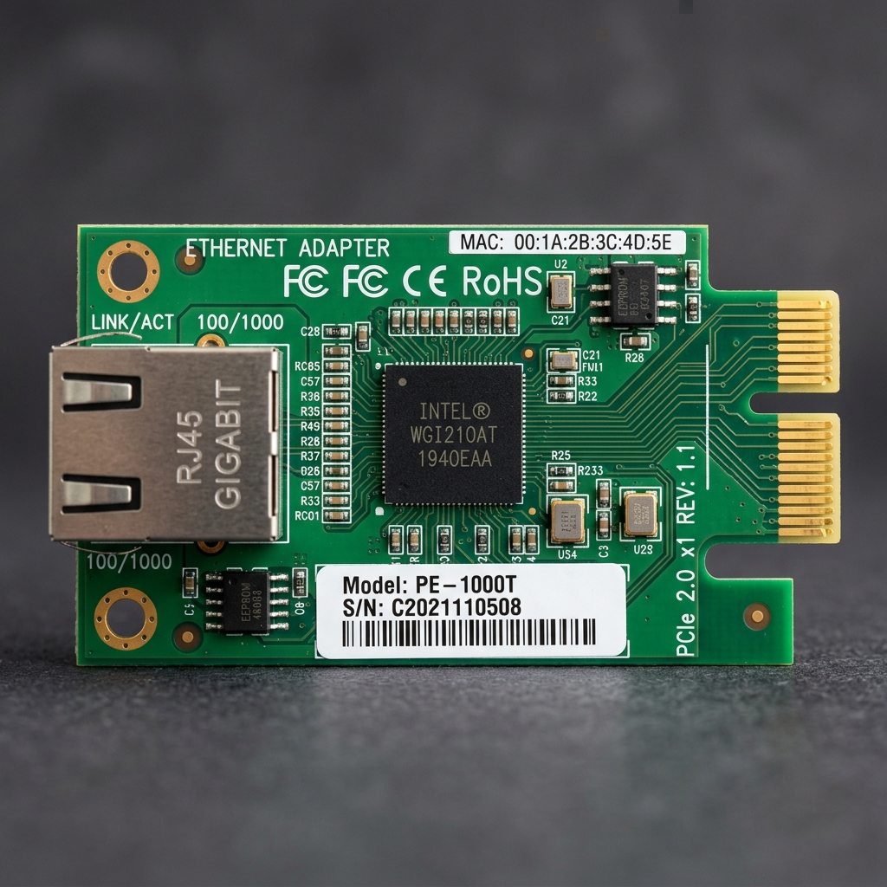

Selamat Datang di AllTools TJKT
Satu tempat untuk berbagai tools praktis belajar, latihan, dan troubleshooting jaringan komputer.
Kategori & Daftar Tools
Networking
IP Address Calculator
Hitung Network, Broadcast, Host Range, dan informasi IPv4.
Networking
Subnet Calculator
Analisis subnet dan pembagian network secara lebih detail.

Networking
MAC Address Tools
Tools untuk informasi dan analisis MAC Address.
Networking
Kabel UTP & Crimping
Susunan pin T568A, T568B, straight, crossover, dan panduan kabel LAN.
Calculator
Bandwidth Calculator
Hitung estimasi waktu transfer dan kebutuhan bandwidth.
Converter
Data Unit & Base Converter
Konversi data, desimal, biner, dan hexadecimal.
TJKT Practice
Subnetting & Quiz
Latihan subnetting dan kuis interaktif untuk TJKT.
Reference
Network Reference
Referensi OSI, TCP/IP, port, protokol, dan jaringan.